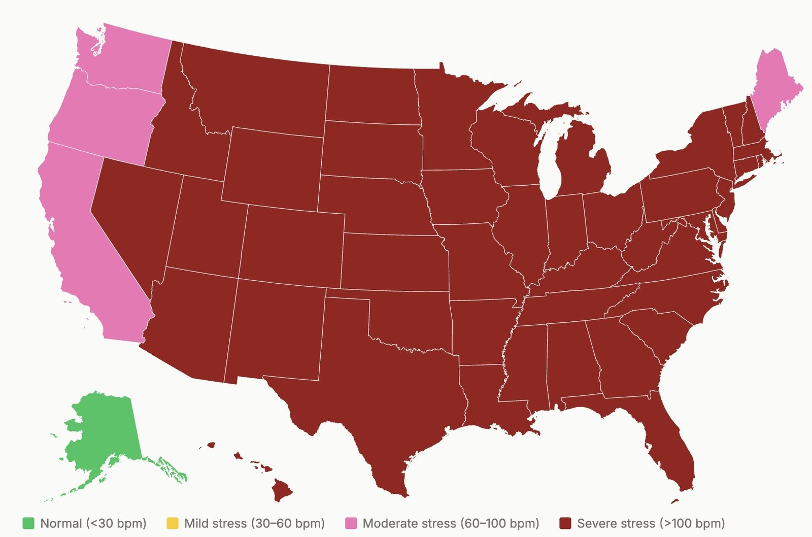
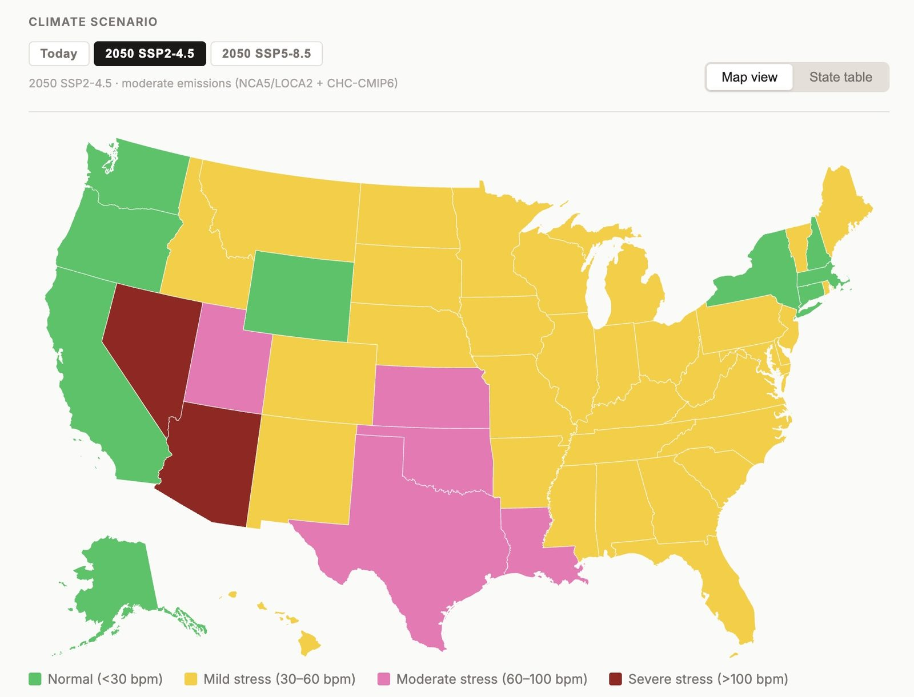

Model the thermal load on your pigs — with and without radiant cooling — using our proprietary heat stress physiology calculator built on peer-reviewed swine research.
Launch CoolSwine Tool Opens at tinyurl.com/coolswineCoolSwine translates barn conditions into actual thermal load on the animal — then shows you exactly how much radiant cooling changes the outcome. Built on swine-specific thermal physiology, not generic animal models.
Input air temperature, humidity, and radiant conditions. The tool calculates the effective heat stress experienced by the pig — not just ambient temperature.
See side-by-side how adding a Clearly Cool panel over each sow reduces thermal load — modeled from real swine physiology data and pilot measurements.
Pigs thermoregulate differently than humans or other livestock. CoolSwine uses species-specific parameters derived from published swine research.
No download or login required. Run scenarios for your barn conditions in seconds and share results with your team or veterinarian.
The tool visualizes thermal comfort zones for sows under typical barn conditions — then recalculates with a Clearly Cool panel overhead. The difference is immediate and quantified.
Add photos/coolswine-without.jpg

Under typical summer barn conditions, sows exceed safe thermal comfort thresholds — reducing feed intake, reproductive performance, and litter outcomes.
Add photos/coolswine-with.jpg

A single 85W radiant panel overhead absorbs heat directly from the sow, pulling thermal load back within the safe comfort zone — without cooling the whole barn.
CoolSwine isn't a rule-of-thumb calculator. It models thermal physiology the way researchers do — accounting for metabolic heat generation, radiant exchange, convection, and evaporation specific to Sus scrofa.
"Conventional temperature-humidity indices were designed for humans or dairy cattle. CoolSwine applies the correct physiological model for pigs — which thermoregulate very differently, especially in farrowing." — Dr. Eric Teitelbaum, Founder & CTO, Clearly Cool
Model your barn conditions and see how radiant cooling changes the thermal outcome for your sows. No login, no download.
🌡️ Open CoolSwine Tool tinyurl.com/coolswine